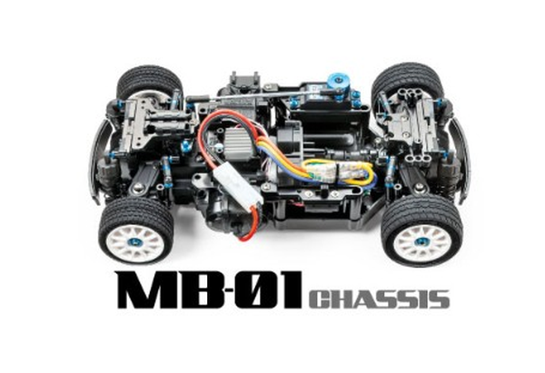

タミヤ MB-01

引用元画像：タミヤ公式サイト
📋 基本情報
| メーカー | タミヤ（Tamiya） |
|---|---|
| 機種名 | MB-01 |
| 型番 | 58721（フィアット アバルト 1000TCR）など |
| 発売時期 | 2023年2月 |
| 生産状況 | 現行販売中 |
| カテゴリー | ラジコンカー（1/10スケール 電動RCカー） |
| サブカテゴリー | Mシャーシ（コンパクト2WD） |
📏 シャーシスペック
| 全長 | 322mm |
|---|---|
| 全幅 | 163mm |
| ホイールベース | 209mm（S）/ 224mm（M）/ 239mm（L） |
| トレッド | 約140mm（推定） |
| タイヤ径 | フロント55mm / リヤ60mm |
| フレーム | モノコック+ユニット化構造 |
⚙️ 駆動系
| 駆動方式 | FF（前輪駆動）またはMR（後輪駆動）選択可能 |
|---|---|
| デフギヤ | 樹脂製4ベベル（TT-02と同じ） |
| ギヤ比 | 5.83:1（29Tピニオン使用時） |
| モーター | 540タイプ |
🔧 サスペンション
| 形式 | 4輪ダブルウィッシュボーン独立懸架 |
|---|---|
| ダンパー | フリクションダンパー |
| ステアリング | 3分割タイロッド式 |
💡 特徴
2種類の駆動方式と3種類のホイールベースが選べる万能シャーシ
- 後輪駆動と前輪駆動が選択可能
- どちらの場合も3種類のホイールベース（209/224/239mm）が選択できる
- 実車の駆動方式に合わせた仕様がチョイスできる
ユニット化による組み立てやすさ
- ユニットモーターマウント、ユニットファイナルギヤケース、サスペンションユニットなど各部分をユニット化
- 組み立てやすく、整備性に優れている
- 初心者でも扱いやすい設計
豊富なオプションパーツ
- MシャーシやTT-02用のホップアップオプションパーツが使用可能
- TT-02用ボールデフやオイル封入式ギヤデフに交換可能
- カスタマイズの自由度が高い
🔧 ぽすとそに工房での修理実績
修理難易度
★☆☆☆☆（非常に簡単、初心者でも修理可能）
よくある故障・注意点
- 現行モデルのため、パーツ入手が容易
- ユニット化により整備性が良好
- TT-02と共通パーツが多く、修理しやすい
修理のポイント
- ユニット単位で交換可能なため、故障箇所の特定が容易
- ビスの締めすぎに注意（変形やネジ穴破損の原因）
- デフギヤはTT-02用パーツと互換性あり
その他の特徴
- パーツも豊富で扱いやすく初心者向け
- Mシャーシシリーズの最新モデル（2023年発売）
- 左右対称設計により整備性が向上
- 多彩なボディバリエーションが装着可能